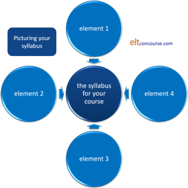
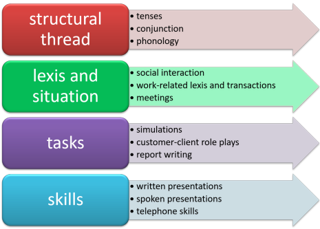

Delta Module Three ELT specialism: course proposal
|
Every course proposal is different. The following is generic advice, therefore. The course proposal lies at the heart of Module Three and is based on the Needs Analysis and initial Diagnostic Assessment that you have done. The suggested word count for this section is 1,100 words, give or take 10%. |
Think for a moment
Consider a successful course that you have taken or
taught. What made it successful? In other words, what are
the characteristics of a successful course?
When you have a short list,
click here for a longer one.
You may not have a list that is the same but some overlap would be good!
- Appropriateness and relevance
Good courses do what they say they will. If learners perceive that the approach, the organisation and the materials are all contributing to the aims and objectives, it will encourage high levels of motivation and commitment and these factors are crucial in a successful course. - Coherence
Good courses are taught by people who appear to know what they are doing and are following some kind of plan. That plan may be made explicitly available to the participants. - Well timetabled
Good courses have timetables which are convenient and intensive enough without being exhausting and confusing. - Materials
Good courses use materials which appeal to the people on the course and are relevant to their aims. Materials which are overtly designed around the course participants are motivating and intriguing. Materials which are professionally presented and error free inspire confidence and that leads to motivation. - Approaches
Good courses use approaches which conform to the styles of the learners and are unthreatening and motivating. - Personnel
Trainers and teachers on good courses are professional, properly prepared, approachable and show overt concern for their learners and that inspires confidence and motivates. Teachers who are sloppy, uncaring or overworked have the opposite effect. - Involving and flexible
Good courses overtly take into consideration the changing needs of the learners and accommodate themselves to those needs. They are flexible and responsive. - Autonomy
Good courses allow the learners appropriate degrees of autonomy to cater for individuals. - Assessment
Good courses contain adequate amounts of assessment pre-, during- and post-course so everyone can see how they are doing. - Environment and equipment
Good courses take place in suitable accommodation and make use of an appropriate range of aids and equipment which is used professionally.
These ten points are just some of the things to bear in mind when writing up the course proposal.
 |
4 things you need to know |
- The course must have a minimum length of 20 hours.
Advice here: if possible, don't try to plan for much longer than 20 hours or you will risk running out of words and being too superficial. If your course is longer than 20 hours, focus on parts of it only. - Unless you are dealing with a one-to-one course, there must be a minimum of three learners
- It is critical that this section is explicitly linked to the theory you discussed in the introduction and the outcomes of the Needs Analysis and diagnostic testing
- You need to base your proposal on principle so simply duplicating the contents of a coursebook will not be enough
 |
7 things you need to tell the reader |
- How have
- the outcomes of your Needs Analysis and
- the results of the diagnostic test
informed your proposal?
- How has your reading and research for the Introduction informed the proposal?
- What are the aims and objectives?
- How is the course going to be organised?
- What teaching approaches will be used?
- What materials will be used?
- What limitations and constraints have affected the course proposal?
 |
How to tell the reader all this |
- The influence of the Needs Analysis and the Diagnostic Test results
- The Needs Analysis had two sections:
The characteristics of the group. You need to consider the outcomes of your investigation concerning things like learning styles, interests, motivations, professional needs and so on.
The diagnostic test. Refer back to the previous section where you have (or should have) summarised the outcomes of the test and prioritised your language and skills targets.
The needs analysis should inform the kind of syllabus you have in mind. This is not the place to write everything you know about syllabus design but it is important to have some kind of overarching understanding of the sort of syllabus you are proposing. See below for more. - Your reading and research
- Right at the outset of the essay, in the introduction, you should have referred to the background literature on your chosen specialism. Here you need to say how what you discovered has influenced the design of the course proposal.
- Aims and objectives
- The objectives will be clear from the nature of most courses but
here you need to draw on the results of the diagnostic testing you
did and the outcomes of the research into the nature of the group
again.
You can set this out as a table like this:Objective Identified from enhancing the learners' ability to ... needs analysis section x, diagnostic test item x, other source (state it) - Organisation
- Based on your aims and objectives and the nature of the group, how best can the course be organised? How many teachers? How many hours? What sort of intensity? What's the timetable?
- Teaching approaches
- What expertise is available to you? What approach will best appeal to the learners and match the course aims?
- Materials
- Do not just list these. You need to justify them
rationally because they target your aims and objectives and are
suitable for the nature of the group.
You may need to discuss the advantages and drawbacks of materials designed for this course by the people teaching it compared to commercially produced generic materials. See below for more. - Limitations and constraints
- No course takes place in an ideal world so you need to mention,
for example:
The availability of teaching staff
The time available
The resources required
Fitting in with institutional timetables
Costs and finance available to you
etc.
 |
Theory and syllabus design |
The theoretical background will normally be supplied by
briefly discussing
major strands in syllabus design and major theoretical underpinnings in
methodology. You may need to refer to the guide to syllabus design
and the guides to various methodologies on this site but you also need
to read quite widely.
As we said above, this is not the place to write everything you know
about syllabus design but it is important to have some kind of
overarching understanding of the sort of syllabus you are proposing.
A way of representing it to yourself and the reader is in some form of
diagram like this:

With a diagram of this sort you can do a number of things:
- You can replace element1 etc. with, for example:
skills for work
functions and notions
situations and lexis
tasks and role plays
simulations
structural work
phonological work
and so on. - You can add and subtract roundels to match what you have in
mind.
If you have more than five or so elements it gets messy and you need to ask yourself if you aren't being too ambitious. - You can vary the sizes of the outer roundels to represent the size of their contribution to the syllabus. You can even use variable colours to represent associated parts of the syllabus.
To see an example of what this might look like, refer to the guide to syllabus design (new tab).
You cannot, of course, simply present the diagram and move on. You need to discuss its content and justify the proportions of the elements of the syllabus with reference to the outcomes of both your diagnostic testing and the needs analysis.
Coherence |
One of the characteristics of a good course is that it is coherent and follows a discernible pattern. A series of one-off lessons won't do. You need, therefore, to demonstrate that your course proposal does this.
One way to do this which has found some favour is to take the
syllabus design (see above) and identify the threads that the course
must contain to cover the main features. You may have, for
example, a notional-functional thread, a structural thread,
task-based elements, situational and lexical elements, skills
elements and so on.
When you set out the timetable and course content, make sure you
colour code the threads so the reader can see, at a glance, what
parts of the learners' needs are being addressed where and when.
It might look something like this:

and, if the colour coding here is followed in the timetable grid,
you and your reader's lives will become easier. You will also
be able to see, at a glance, whether the timetable looks unbalanced
or just fine.
 |
Presentation |
You may decide, as most people do, to use tables and charts such as the suggestions above to set out the course proposal. That's fine but make sure you don't only do that. You need to discuss the reasons for the design of the course and the underlying principles.
A note about materials |
The Cambridge Delta handbook states:
Published materials from coursebooks may be used, but candidates still need to justify their use in relation to the aims of the course and learners’ needs.
Here are some considerations:
| In favour of specially-designed materials | In favour of commercially-produced materials |
|
contextualisation if you write your own materials they will be targeted and not contain, e.g., situations and language which the learners will never encounter or need |
organisation good commercially produced materials are carefully organised by professional writers and have a clear coherence |
|
needs in-house materials can be carefully targeted at the needs you have identified elsewhere |
quality good commercially produced materials look the part because they are professionally printed and designed |
|
personalisation in-house produced materials can enhance motivation by being explicitly relevant to the people on the course |
range good commercially produced materials often come with a range of add-ons (DVDs, CDs, websites etc.) which most in-house materials can't match |
If you take these sorts of considerations into account, the best way
forward may well be to use commercially produced materials for parts of
the course most appropriate for them and fill the gaps or target special
needs with in-house produced materials.
Whatever you do, you need to justify the doing of it.
Review what you have written |
The course proposal carries 25% of the available marks for Module
Three so it's important to get it right.
Read through it again when
you have finished (or think you have) and check how a reader will react
to it.
 |
Avoid the obvious errors |
Examiners' reports contain more or less the same catalogue of
weaknesses year after year so be careful to avoid any of the
following being levelled at your course proposal.
For this section, the most frequently cited problems are:
- not striking a balance between discussing goals and objectives
and explaining the rationale for the course as a whole
- Make sure you say what you will aim to achieve but also why (based, of course, on the needs analysis)
- failing to link areas of the course programme
- Where is material recycled and from where?
- How do receptive and productive skills work complement each other?
- How is the course sequenced? Why is it done that way?
- failing to provide enough detail
- What will be taught?
- How and where will objectives be met?
- listing rather than explaining
- Do not simply set out the programme. Make sure you explain and justify the ordering and structure
- Make sure that you include samples of materials etc. in the appendices to make things clear
ELTJ Journal references you may find helpful:
Batstone, R, 1988, Teachers and course design: the case for a
modular approach, ELT Journal Volume 42/3, Oxford: Oxford
University Press p185 et seq.
Cotterall, S, 1995, Developing a course strategy for learner
autonomy, ELT Journal Volume 49/3, Oxford: Oxford University Press
p219 et seq.
Sharp, A, 1990, Staff/student participation in course evaluation: a
procedure for improving course design, ELT Journal Volume 44/2, Oxford:
Oxford University Press
The reading list for Module Three is available
from the link below.
Test yourself on the contents of this guide.
| The Module Three ELT Specialism areas: | |||
| Choosing the topic | Writing the essay | The introduction | Needs analysis |
| Testing | Course proposal | Module 3 reading list | Before you submit |